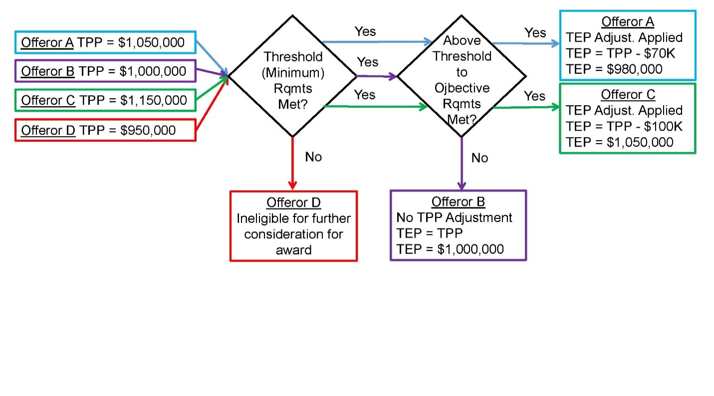

APPENDIX B Table Of Contents
Tradeoff Source Selection Process:
Subjective Tradeoff and Value Adjusted Total Evaluated Price Tradeoff
B-1 Subjective Tradeoff
Where the tradeoff source selection process is used to obtain best value, the subjective tradeoff process is appropriate for most Army source selections. The subjective tradeoff process provides the following benefits in source selection:
-
The ability for offerors to propose various technical approaches that may be of benefit to the Government. The competitive environment should encourage the freedom to do so depending upon what the solicitation places the most value/importance upon;
-
The ability to have meaningful comparisons and establish discriminators among competing proposals;
-
The ability to place a greater value on past performance by enabling discernment of an offeror’s performance record;
-
The ability of the SSA to give consideration to the benefit/value of non-cost/price factor differences between offerors and to determine if those differences justify paying the cost/price differential between them.
When using this process, clearly:
-
State the relative importance of the factors and subfactors;
-
Describe in Section L approaches or capabilities that the Government places a higher value on for exceeding the threshold (minimum) requirements if applicable, and;
-
Describe in Section M how the Government will assign findings (strengths or significant strengths) correlated to the expected positive impact of, or benefit received, where the offeror exceeds threshold requirements when evaluating these areas.
Use of Entry-Gate Criteria – As part of the subjective tradeoff source selection process, the DOD Source Selection Procedures allows for the use of entry-gate criteria. This is considered a combination approach utilizing concepts from both LPTA and Subjective Tradeoff. When determining your evaluation criteria, the PM and the PCO should closely examine the key requirements and carefully consider whether some objective elements (i.e. entry-gate criteria) could be evaluated using an acceptable/unacceptable or pass/fail rating methodology. During the evaluation of proposals, offerors must be determined to be acceptable or pass the entry-gate criteria in order to advance in the subjective tradeoff evaluation. When the requirement can be clearly stated with a corresponding standard of proof, using this combination approach with entry-gate criteria can simplify and streamline the evaluation process. See also Appendix C for more information on acceptable/ unacceptable criteria.
B-2 Value Adjusted Total Evaluated Price Tradeoff
VATEP may be appropriate where the PM is able to establish an affordability cap (limits on pursuing any above-threshold requirements), determine a relative order of importance for above-minimum performance or criteria, and assign a monetary value. Use of VATEP may be most suitable for procuring developmental items, where the Government can determine the value (or worth) of “better performance” and quantify it in the RFP.
VATEP Example 1
Scenario: This effort is for the purchase of an aircraft with multiple minimum performance specifications (threshold), some of which also have desired performance specifications (objective). The PM / RA has identified the 3 most desired objectives for which a Value Adjusted Total Evaluated Price will be determined.
SECTION M LANGUAGE : At the end of the paragraph, “Basis of Award”, insert the following language:This RFP employs the use of Value Adjusted Total Evaluated Price (VATEP) techniques which identifies, in advance, the value placed on above-threshold performance or capabilities in the Air Movement Mission-Range and Payload, Self-Deployment, and/or Cruise Airspeed requirements. The specific VATEP procedures and values for this effort are set forth below:If an offeror’s proposal exceeds the mandatory minimum performance specifications for the Air Movement Mission-Range and Payload, Self-Deployment Mission, and/or Cruise Airspeed requirements set forth in the Air Vehicle technical subfactor, the following VATEP procedures will be applied:An offeror can earn VATEP evaluation credit for meeting performance between the threshold and objective for the Air Movement Mission-Range and Payload and/or Cruise Airspeed requirements. An offeror can also earn VATEP evaluation credit for meeting the objective for the Self-Deployment Mission. The VATEP eligible objectives shall be embodied in the FUA Aircraft and also priced and delivered in Contract Line Item Number (CLIN) X001AA.The offeror’s total evaluated price for CLIN X001AA will be adjusted, for evaluation purposes only, in accordance with the chart below where above-threshold performance has been achieved for any of the three objectives identified. The VATEP objectives must be available on the first aircraft in order to be eligible for VATEP evaluation credit. Risk will not be assessed in VATEP since risk was already assessed in the Air Vehicle subfactor.
|
VATEP Objectives |
Specification Paragraph |
Maximum VATEP % Reduction in CLIN X001AA Proposed Price |
Calculation of VATEP % |
Identify where in Offeror’s proposal the VATEP objective is met or partially met |
|
Air Movement Mission-Range and Payload |
6.3.2 |
3% |
(Offerors proposed payload less the threshold of 2100)/600*3% [Not-to-Exceed 3%) NOTE: 2100 is the threshold and 600 is the delta between the threshold and objective |
|
|
Self-Deployment |
6.3.1 |
2% |
Objective is binary. An Offerors proposal will either meet or fail to meet the objective. |
|
|
Cruise Airspeed |
6.1.6 |
1% |
(Offerors proposed cruise airspeed less the threshold of 250)/150*1% [Not-to-Exceed 1%] NOTE : 250 is the threshold and 150 is the delta between the threshold and objective |
The SSA will consider the VATEP of the cost/price factor, along with the other evaluation factors, in making the source selection decision.VATEP is a technique used for evaluation purposes only. The value adjusted total evaluated price will not change the proposed unit prices set forth in Section B of the proposal, nor will it change the estimated contract value for award purposes.
SECTION L LANGUAGE : The offeror shall complete RFP Attachment L-5 (VATEP Calculations) to facilitate the Government’s review process.
(NOTE: RFP Attachment L-5 contains the chart identified in Section M above.)
VATEP Example 2
Example: The Army is buying a large equipment trailer (LET) using VATEP, and one of the requirements is maximum payload. The threshold is 80,000 lbs, and the objective is 85,000. As stated in the RFP, During Step 2 of the VATEP process the SST will adjust each offeror’s total proposed price (TPP) to derive the total evaluated price (TEP) by $1,000 for each 50 lbs. of increased payload over the threshold, for a maximum adjustment to the TEP of $100,000. This adjustment is for evaluation purposes only, and will not change the proposed pricing, which will become the awarded price. If an offeror proposes the threshold for payload, then they will receive no adjustment.
In this example, four proposals are received:
-
Offeror A: TPP=$1,050,000; at least an “acceptable” rating for all minimum requirements, proposes a maximum payload of 83,500 lbs, an increase of 3,500 lbs. over the threshold.
-
Offeror B: TPP=$1,000,000; at least an “acceptable” rating for all minimum requirements, proposes the threshold maximum payload of 80,000 lbs.
-
Offeror C: TPP=$1,150,000; at least an “acceptable” rating for all minimum requirements, proposes a maximum payload at the objective level of 85,000 lbs, an increase of 5,000 lbs over the threshold
-
Offeror D: TPP=$950,000; “unacceptable” for two minimum requirements, proposes a maximum payload at the objective level of 85,000 lbs, an increase of 5,000 lbs. over the threshold. Offeror D is eliminated in Step 1.
At the conclusion of Step 1, offeror B has the lowest TPP, with offeror A as the second-lowest cost/price and Offeror C as the highest price. However, offerors A and C have their TPPs adjusted since they have proposed maximum payloads above the threshold, while offeror B has no adjustment since they have proposed only the threshold maximum payload. The TEP adjustments are as follows:
-
Offeror A has proposed an increase of 3,500 lbs, which leads to a decrease of their TPP by $70,000, for a TEP of $980,000.
-
Offeror B has proposed the threshold, and receives no adjustment to their TPP. Therefore, their TEP is $1,000,000.
-
Offeror C has a proposed increase of 5,000 lbs, which leads to a decrease of their TPP by the maximum amount of $100,000, for a TEP of $1,050,000.

Requirement: The US Government (USG) is soliciting for a large equipment trailer (LET). The LET has a rated payload of a minimum of 80,000 lbs (40 tons), with an objective payload of 85,000 lbs (42.5 tons). The LET is to be used to transport a variety of equipment. The LET will be employed for use on primary and secondary roads. The payload objective will be used to determine a Value Adjusted Total Evaluated Price (VATEP).
SECTION M LANGUAGE : At the end of the “Basis of Award” paragraph, insert the following language:
This RFP employs the use of the Value Adjusted Total Evaluated Price (VATEP) technique, which identifies in advance the value placed on above-threshold performance for the payload requirement. The specific VATEP procedures and value for this effort are set forth below.The Offeror’s total proposed price will be adjusted to arrive at a total evaluated price, for evaluation purposes only, in accordance with the chart below where above-threshold performance has been achieved for the payload requirement. The VATEP objective must be available on the first LET in order to be eligible for VATEP evaluation credit. Risk will not be assessed in VATEP. For each 50 lbs of increased payload, the total evaluated price (TEP) will be reduced by $1,000, for a maximum adjustment to TEP of $100,000. No credit will be provided above the maximum for performance over the objective.
|
VATEP Objectives |
ATPD Paragraph |
Maximum VATEP Reduction to Total Evaluated Price |
Calculation of VATEP % |
Identify where in Offeror’s proposal the VATEP objective is met or partially met |
|
Payload |
4.3.2 |
$100,000 |
(Offeror’s proposed payload less the threshold of 8000)/50*$1,000 [Not-to-Exceed $100,000 total reduction] NOTE: 8000 is the threshold and 5,000 is the delta between the threshold and objective |
The SSA will consider the VATEP of the cost/price factor, along with the other evaluation factors, in making the source selection decision.The VATEP adjustment is for evaluation purposes only, and will not change the proposed pricing, which will become the awarded price. If an Offeror proposes the threshold for payload, then they will receive no adjustment.
SECTION L LANGUAGE : The offeror shall complete RFP Attachment L-X (VATEP Calculations) to facilitate the Government review process.
The offeror’s LET shall meet or exceed the threshold identified in the table below. LETs that fail to meet the threshold will not be considered. If an offeror’s proposed payload exceeds the threshold performance specification set forth in the technical subfactor, the following VATEP procedures will be applied:An offeror can earn VATEP evaluation credit for meeting performance between the threshold and objective, or for meeting the objective requirement. This credit will be assessed as a reduction in the total evaluated price. If performance between threshold and objective is being proposed, the exact performance value shall be listed in Attachment L-X. An LET that meets the proposed above-threshold payload performance shall also be priced and delivered in CLIN X001AA.